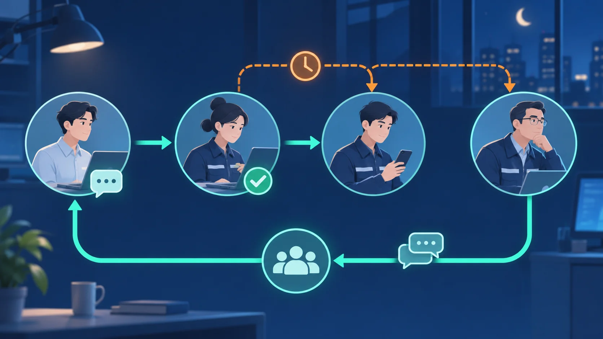

Article · 飞函
Article · 飞函
企业如何为紧急通知设置升级路径，避免群内无人认领
设备故障影响生产时，值班人员把情况发进协作群，几位同事都看到了，却没人明确回复“我来处理”。十分钟后，发起人仍不知道该找谁。问题往往不在通知有没有送达，而在通知发出后，谁必须认领、多久内认领、无人回应时找谁。
先定义“有人负责”
紧急通知应指向一个当班责任人，而不只是一个群。企业可以按事件类型和业务时段，预先写明主责岗位、备岗以及升级负责人。例如，生产系统故障由当班运维认领；主责人员休假或超时未回应时，由备岗接手，再由值班负责人协调资源。
“已读”可以帮助发起人判断消息是否被查看，但不能代替认领。约定一条简短的确认格式更有效：谁接手、何时给出下一次进展、需要谁协助。即使暂时无法解决，也应先让责任归属清楚。
给超时后的动作排好顺序
升级路径需要写到具体动作，而不是只写“及时跟进”。一条可执行的路径可以是：
- **发出通知：**写明事件、影响范围、紧急程度和期望的认领时限，直接通知主责人员。
- **等待认领：**到达约定时限仍无人明确接手，就联系备岗，并在原群说明已升级。
- **继续升级：**备岗也无法承接时，联系值班负责人；需要多人判断时，立即拉会明确分工。
- **回到原处闭环：**由实际责任人持续更新进展，结束时说明处置结果和后续事项，让群内成员知道事件已有人负责。
时限应由团队根据事件影响和排班能力确定。夜间、节假日和跨部门事件尤其要事先确认备岗是否真实可达。若即时消息长时间没有回应，还应按企业既定值班制度切换到电话等渠道，避免升级停留在同一个群里。

让协作工具承接流程，但保留清晰的责任规则
在飞函中，团队可用重要消息和已读回执辅助识别通知是否被关注，用群聊保留事件上下文；需要集中判断时，再通过快速拉会协调相关人员。这些能力有助于减少反复转述，但“已读后多久必须认领、由谁升级”仍需要企业自己制定并执行。
落地时，不妨先选一种常见紧急事件试运行：检查通知是否找到当班人员、超时后是否联系到备岗、处置进展是否回到原群。复盘的重点是找出责任断点，再调整排班、时限和通知模板。这样，群消息才能从“大家都看见了”，变成“有人接手并持续反馈”。